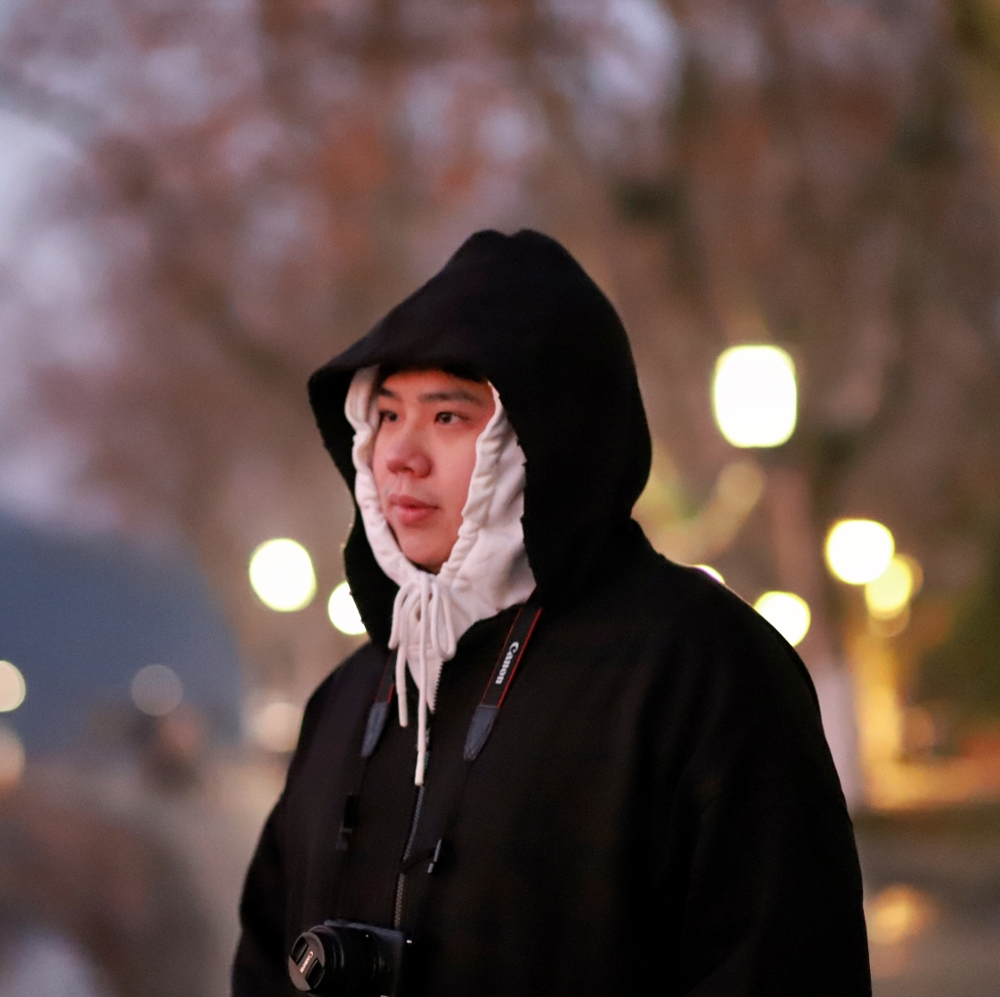
I am currently a Research Assistant at Spatial Intelligence and Robotics Lab (SIR Lab) supervised by Prof. Peidong Liu. I obtained a B.Eng. in Information Engineering from Guangdong University of Technology in 2024. Previously, I worked as a research intern in SIR Lab during my senior year, focusing on 3D reconstruction. In summer 2023, I visited the University of Cambridge to study deep learning and computer vision. Before that, under the supervision of Prof. Wei Meng, I studied robotics and the application of computer vision in intelligent robots, such as VO/VIO/SLAM.
My research interest lies in 3D vision and Robotics. I aim to construct a representation of the real world in computers that mirrors human visual perception, fully utilizing latent information in 2D images such as blur, optical flow, events, or camera poses. I believe that reconstructing 3D/4D scenes in real time from video, along with richer signals such as mesh, surface normal, texture, material, and scene flow, can help robots reason more like humans and interact with the real world more efficiently.
* denotes equal contribution or advising; † denotes corresponding author
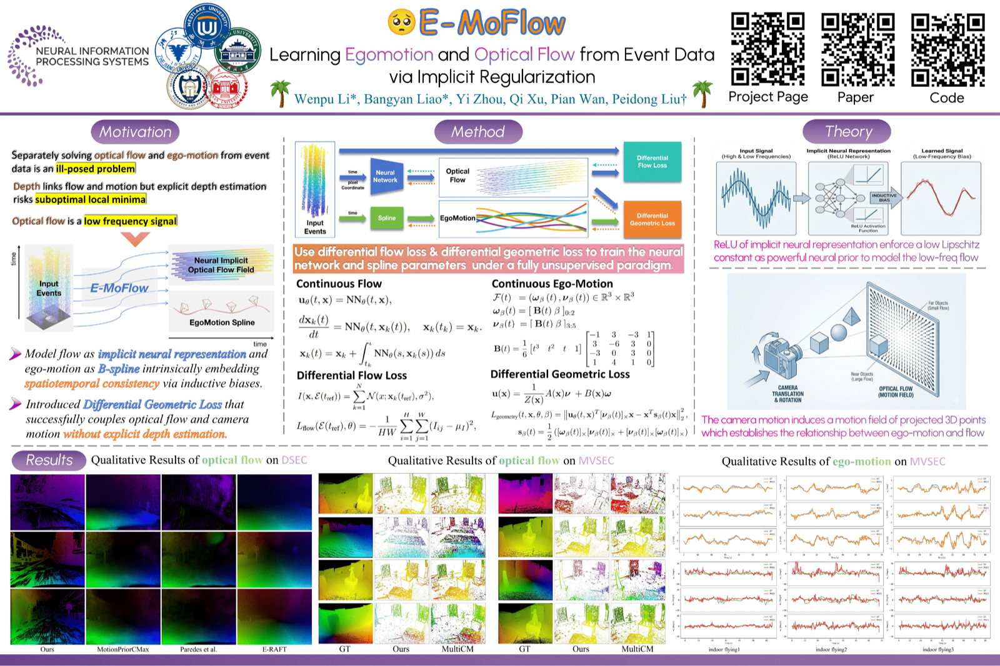
E-MoFlow jointly learns 6-DoF egomotion and optical flow from events in a fully unsupervised paradigm, without explicit depth estimation.
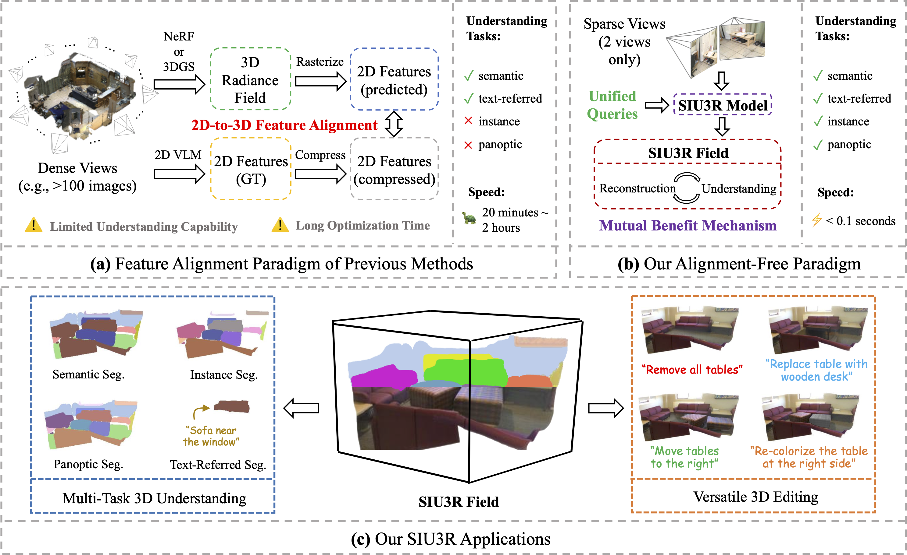
SIU3R is a feed-forward framework for simultaneous scene understanding and reconstruction from unposed images, unifying reconstruction with semantic, instance, panoptic, and text-referred segmentation.
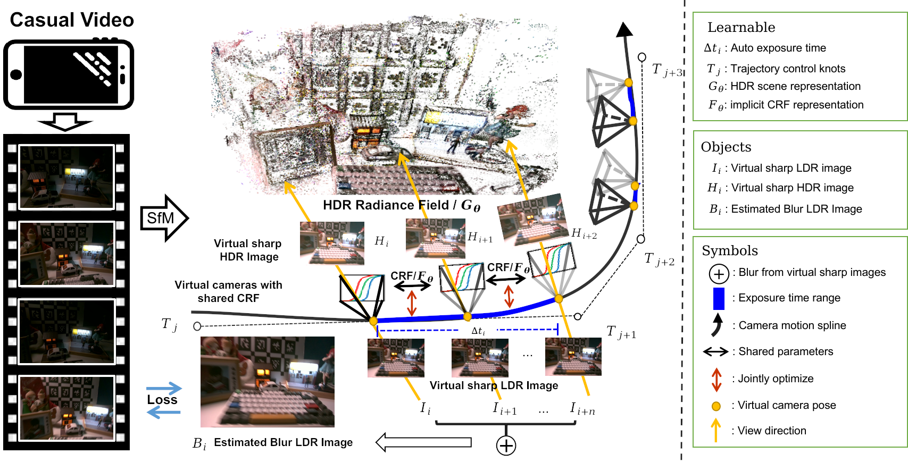
Casual3DHDR reconstructs sharp HDR Gaussians from videos, jointly optimizing exposure time, CRF, camera motion, and the HDR scene.
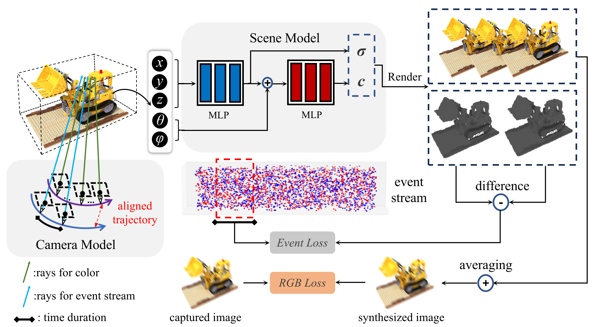
From a single blurry image and event stream, BeNeRF recovers neural radiance fields and camera motion, then decodes the scene into a clear, vivid novel-view video stream.
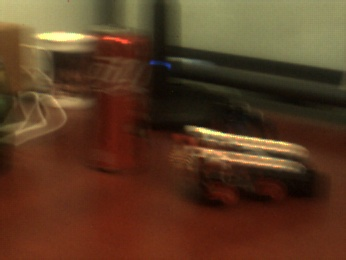
Blurry input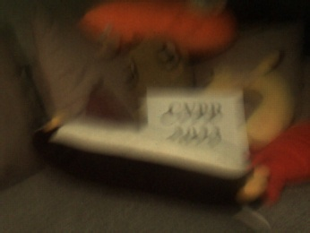
Blurry input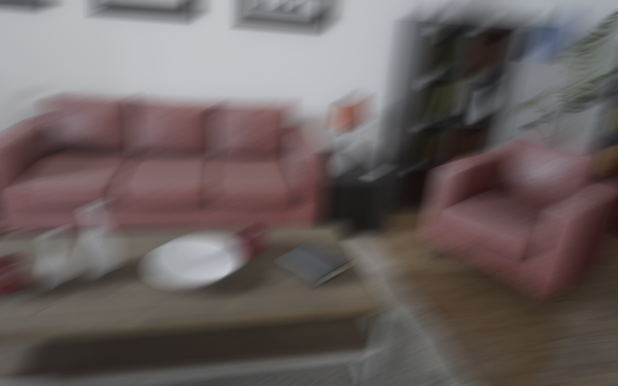
Blurry input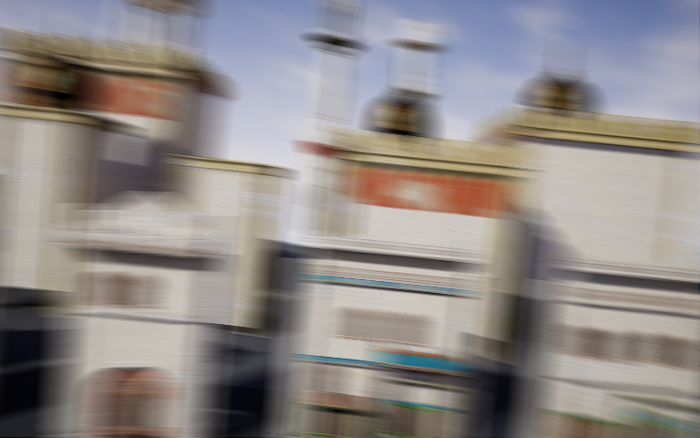
Blurry input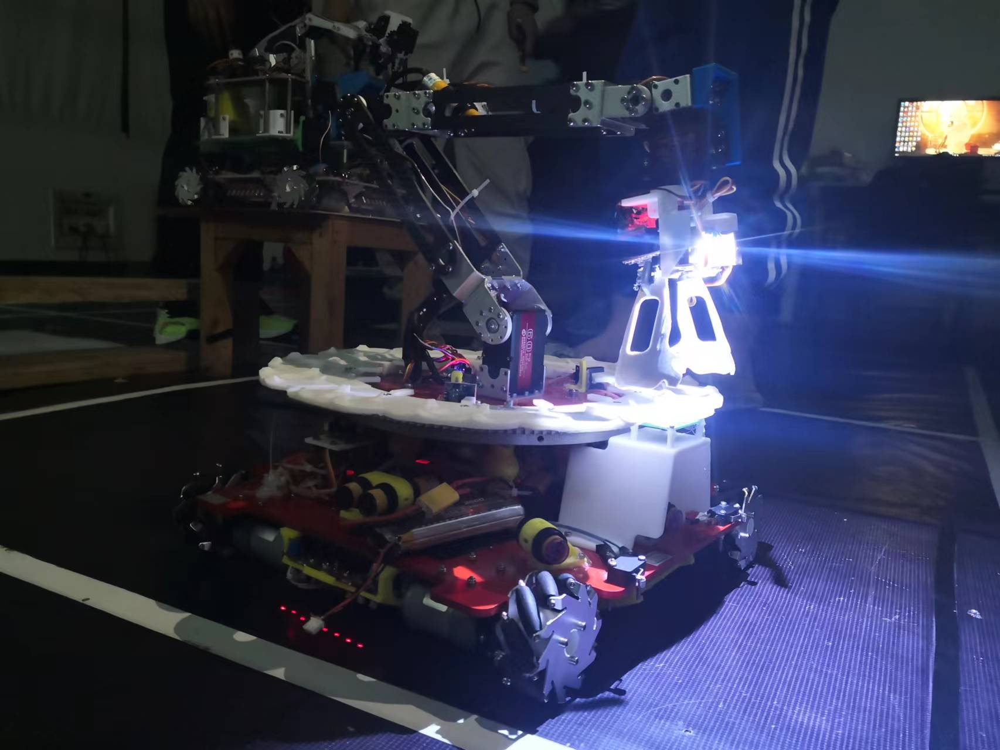
TL;DR: I developed software for robot navigation, localization, object recognition, and control to complete the automatic storage task.
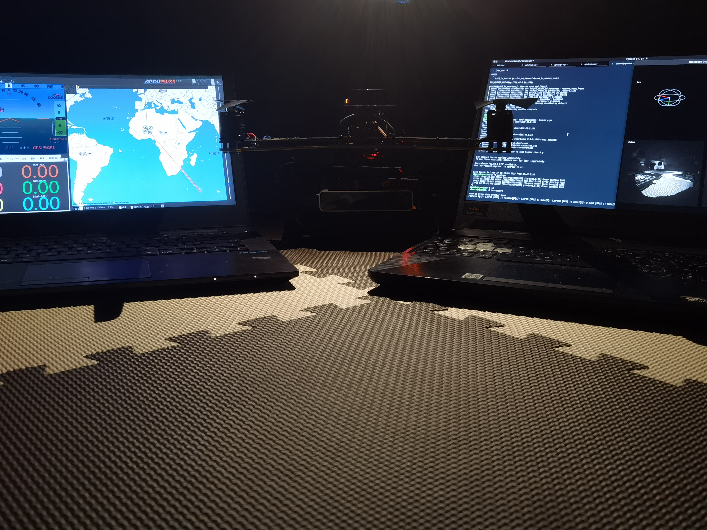
TL;DR: I worked with Guohua Zhang on deploying an Intel T265 camera and visual odometry for UAV localization. I also used a ZED camera to collect datasets for evaluating ORB-SLAM2 and Stereo-DSO.
Thanks to Wenyi Zhang for taking the portrait for my homepage.